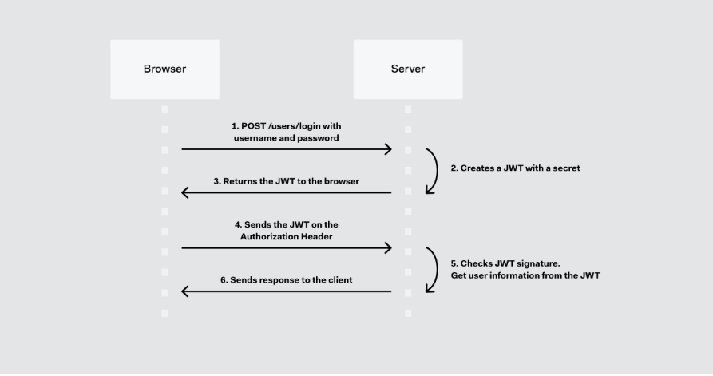

Week04
Questions:
-
How do I get JSON Web Tokens?
-
What is JSON Web Token claims?
-
Does Google use JWT?
-
What is JSON Web Token in node JS?
-
Is JWT encrypted?
JSON Web Token
These are some scenarios where JSON Web Tokens are useful:
-
Authentication: This is the typical scenario for using JWT, once the user is logged in, each subsequent
request will include the JWT, allowing the user to access routes, services, and resources that are permitted
with that token.
-
Information Exchange: JWTs are a good way of securely transmitting information between parties, because as
they can be signed, for example using a public/private key pair, you can be sure that the sender is who they
say they are.
Which is the json web token structure?
Header
Payload
Signature
The output is three Base64 strings separated by dots that can be easily passed in HTML and HTTP environments,
while being more compact compared to XML-based standards such as SAML.
The following shows a JWT that has the previous header and payload encoded and it is signed with a secret.
How json web tokens work?

Why should you use json web tokens?
-
As JSON is less verbose than XML, when it is encoded its size is also smaller; making JWT more compact than
SAML. This makes JWT a good choice to be passed in HTML and HTTP environments.
-
JSON parsers are common in most programming languages, because they map directly to objects, conversely XML
doesn’t have a natural document-to-object mapping. This makes it easier to work with JWT than SAML
assertions.
-
Promises can be used instead of callbacks to deal with multiple asynchronous actions in sequence. They also
provide a nicer mechanism for handling errors.